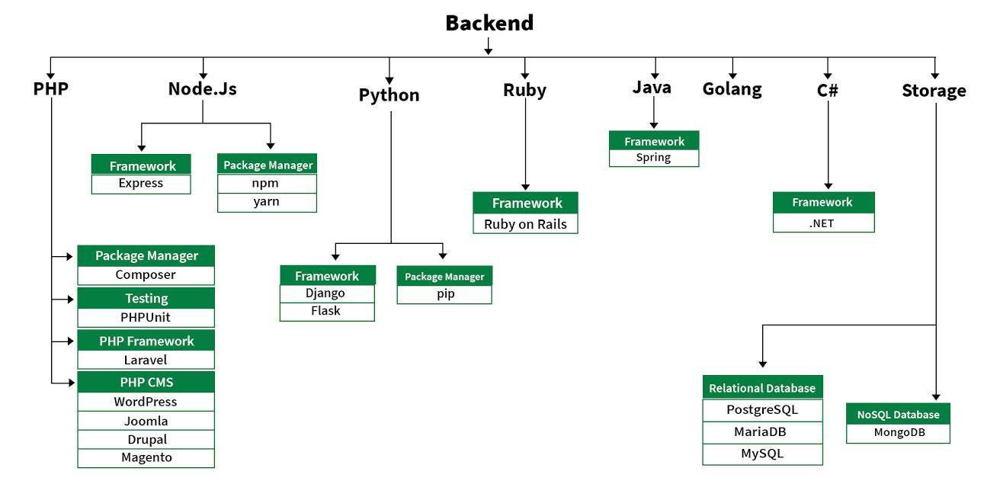

Що таке WEB-технології?
Веб-технології можна розділити на такі розділи:
- Всесвітня павутина (WWW): Всесвітня павутина базується на кількох різних технологіях: веб-браузерах, мові розмітки гіпертексту (HTML) і протоколі передачі гіпертексту (HTTP).
- Веб-браузер: веб-браузер – це прикладне програмне забезпечення для перегляду www (Всесвітньої павутини). Він забезпечує інтерфейс між сервером і клієнтом і запитує сервер для веб-документів і послуг.
- Веб-сервер: веб-сервер — це програма, яка обробляє мережеві запити користувачів і обслуговує їх файлами, які створюють веб-сторінки. Цей обмін відбувається за допомогою протоколу передачі гіпертексту (HTTP).
- Веб-сторінки: веб-сторінка – це цифровий документ, пов’язаний із Всесвітньою павутиною, який може переглядати будь-хто, хто підключений до Інтернету та має веб-браузер.
- Веб-розробка: веб-розробка стосується створення, створення та підтримки веб-сайтів. Він включає такі аспекти, як веб-дизайн, веб-публікація, веб-програмування та керування базами даних. Це створення програми, яка працює через Інтернет, тобто веб-сайти.
Веб-розробку можна класифікувати двома способами:
1.Розробка інтерфейсу: частина веб-сайту, з якою безпосередньо взаємодіє користувач, називається інтерфейсом. Її також називають «клієнтською стороною» програми.

2.Розробка бекенда: бекенд — це серверна частина веб-сайту. Це частина веб-сайту, яку користувачі не можуть бачити та взаємодіяти. Це частина програмного забезпечення, яка не контактує безпосередньо з користувачами. Він використовується для зберігання та впорядкування даних.
Мови інтерфейсу: частина інтерфейсу побудована за допомогою деяких мов, які обговорюються нижче:
- HTML означає мову розмітки гіпертексту. Він використовується для розробки зовнішньої частини веб-сторінок за допомогою мови розмітки. HTML - це комбінація гіпертексту та мови розмітки. Гіпертекст визначає зв'язок між веб-сторінками. Мова розмітки використовується для визначення текстової документації в тегу, який визначає структуру веб-сторінок.
- CSS: каскадні таблиці стилів, які люблять називати CSS, — це просто розроблена мова, призначена для спрощення процесу створення веб-сторінок, які виглядають презентабельно. CSS дозволяє застосовувати стилі до веб-сторінок. Що ще важливіше, CSS дозволяє робити це незалежно від HTML-коду, з якого складається кожна веб-сторінка.
- JavaScript: JavaScript — це відома мова сценаріїв, яка використовується для створення магії на сайтах, щоб зробити сайт інтерактивним для користувача. Він використовується для покращення функціональності веб-сайту для запуску класних ігор і веб-програмного забезпечення.
- AJAX: Ajax є абревіатурою для Asynchronous Javascript і XML. Він використовується для зв’язку із сервером без оновлення веб-сторінки, що сприяє покращенню взаємодії з користувачем і продуктивності.
- PHP: PHP — це серверна мова сценаріїв, розроблена спеціально для веб-розробки. Оскільки код PHP виконується на стороні сервера, його називають мовою сценаріїв на стороні сервера.
- Node.js: Node.js — це кросплатформне середовище виконання з відкритим кодом для виконання коду JavaScript поза браузером. Ви повинні пам’ятати, що NodeJS не є фреймворком і не є мовою програмування. Більшість людей плутають і розуміють, що це фреймворк або мова програмування. Ми часто використовуємо Node.js для створення внутрішніх служб, таких як API, наприклад Web App або Mobile App. Він використовується у виробництві великими компаніями, такими як Paypal, Uber, Netflix, Wallmart тощо.
- Python: Python — це мова програмування, яка дає змогу швидко працювати та ефективніше інтегрувати системи.
- Ruby: Ruby — це динамічна, рефлексивна, об’єктно-орієнтована мова програмування загального призначення. Ruby — це чиста об’єктно-орієнтована мова, розроблена Юкіхіро Мацумото. Все в Ruby є об’єктом, крім блоків, але для нього також є заміни, наприклад, procs і lambda. Мета розробки Ruby полягала в тому, щоб змусити його діяти як розумний буфер між людьми-програмістами та основною обчислювальною технікою.
- Java: Java є однією з найпопулярніших і широко використовуваних мов програмування та платформ. Він дуже масштабований. Компоненти Java легкодоступні.
- JavaScript: JavaScript можна використовувати як (інтерфейс, так і сервер) програмування.
- Golang: Golang — це процедурна та статично типізована мова програмування, яка має синтаксис, подібний до мови програмування C. Іноді її називають мовою програмування Go.
- C#: C# — це сучасна, об’єктно-орієнтована мова програмування загального призначення, яка вимовляється як «сі».
- СУБД: програмне забезпечення, яке використовується для керування базою даних, називається системою керування базами даних (СУБД).
Нижче наведено два поширені формати даних, які використовуються у веб-розробці:
- XML:розширювана мова розмітки (XML) — це мова розмітки, яка визначає набір правил для кодування документів у форматі, який читається як людиною, так і машиною.
- JSON:JSON або JavaScript Object Notation – це формат для структурування даних.
Веб-протоколи: веб-протоколи — це набір правил, яких дотримуються всі, хто спілкується через Інтернет.
- HTTP: протокол передачі гіпертексту (HTTP) призначений для забезпечення зв’язку між клієнтами та серверами. HTTP працює як протокол запит-відповідь між клієнтом і сервером. Веб-браузер може бути клієнтом, а програма на комп’ютері, на якому розміщено веб-сайт, може бути сервером.
- Інші протоколи:
- Модель TCP/IP
- UDP
- FTP
- SMTP
- SOAP
- Полотно: елемент HTML «полотно» використовується для малювання графіки за допомогою JavaScript.
- SVG: SVG означає масштабовану векторну графіку. В основному він визначає векторну графіку у форматі XML.
Графіка: графічні елементи є однією з ключових особливостей будь-якої веб-сторінки. Вони можуть бути використані для передачі важливих моментів краще, ніж текст, і для прикрашання веб-сторінки.
Розглядаючи складові Web-технологій, не можна не згадати про дуже важливу сферу, таку як Web-дизайн.
Що таке WEB-дизайн?

Веб-дизайн стосується дизайну веб-сайтів, які відображаються в Інтернеті. Зазвичай це стосується аспектів взаємодії з користувачем під час розробки веб-сайту, а не розробки програмного забезпечення. Раніше веб-дизайн був зосереджений на розробці веб-сайтів для настільних браузерів; однак із середини 2010-х років дизайн для мобільних і планшетних браузерів стає дедалі важливішим.
Веб-дизайнер працює над зовнішнім виглядом, макетом і, в деяких випадках, вмістом веб-сайту. Зовнішній вигляд, наприклад, пов’язаний з кольорами, шрифтом і зображеннями, які використовуються. Розмітка стосується того, як інформація структурована та класифікована. Хороший веб-дизайн простий у використанні, естетично привабливий і підходить групі користувачів і бренду веб-сайту. Багато веб-сторінок розроблено з упором на простоту, щоб на них не з’являлася зайва інформація та функціональні можливості, які можуть відволікати або заплутати користувачів. Оскільки наріжним каменем роботи веб-дизайнера є сайт, який завойовує та зміцнює довіру цільової аудиторії, усунення якомога більшої кількості потенційних точок розчарування користувачів є критично важливим питанням.
Найпоширенішим методом розробки веб-сайтів, який добре працює як на комп’ютері, так і на мобільних пристроях, є адаптивний дизайн. У адаптивному дизайні контент переміщується динамічно залежно від розміру екрана; в адаптивному дизайні вміст веб-сайту фіксується у розмірах макета, які відповідають стандартним розмірам екрана. Збереження макета, який є максимально узгодженим між пристроями, має вирішальне значення для збереження довіри та взаємодії користувачів. Оскільки адаптивний дизайн може викликати труднощі в цьому відношенні, дизайнери повинні бути обережними, відмовляючись від контролю над тим, як виглядатиме їхня робота. Якщо вони також відповідають за зміст, хоча їм може знадобитися розширити свій набір навичок, вони отримають перевагу повного контролю над готовим продуктом.